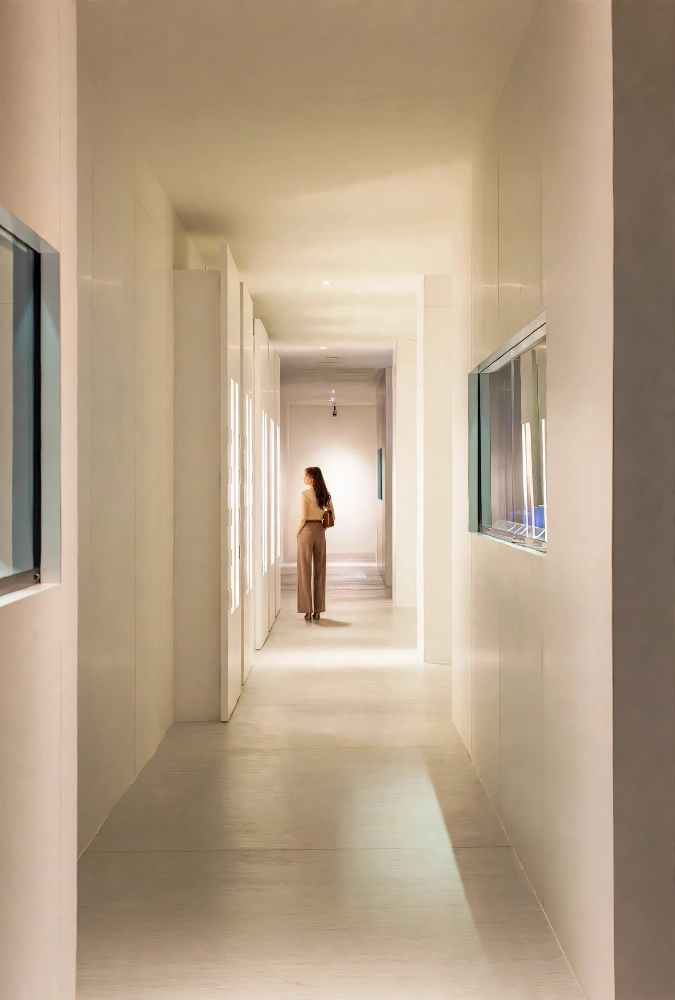
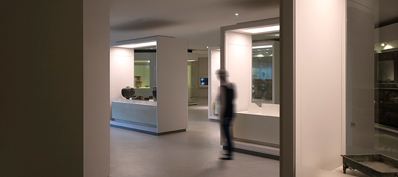
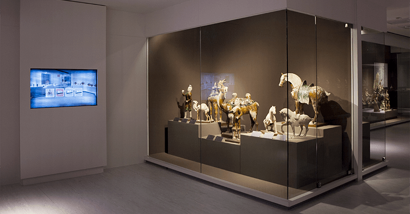
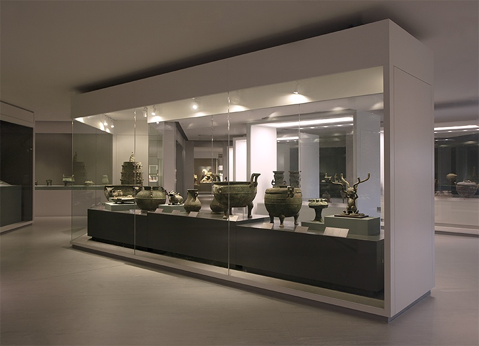
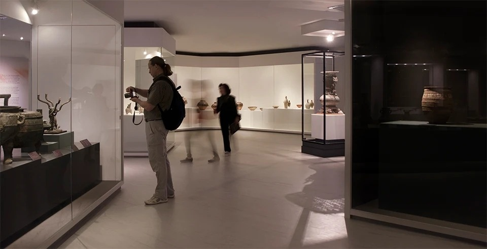
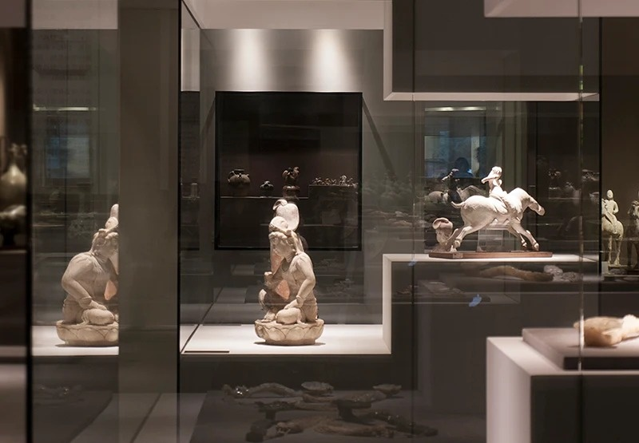
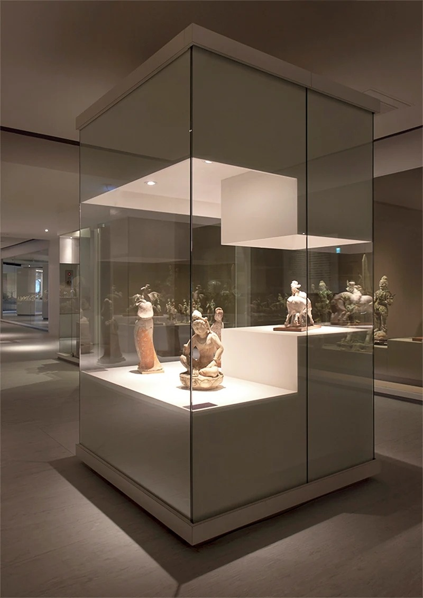
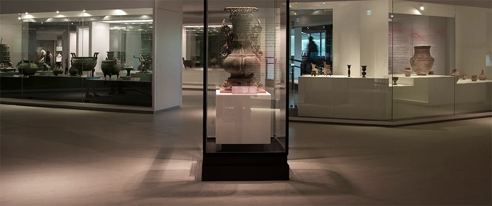

Highlights of NMH Collection Exhibition
Scope
This was the last indoor permanent exhibition before the museum closed for renovation, succeeding the former Chinese Antiquities from the Collection. The scope covered Rooms 301 to 303 on the third floor: a complete renewal of the permanent gallery delivered in six months, inside a legally protected palace-style building where the structure could not be altered, with the display re-selected from a collection of more than sixty thousand objects, including 5 National Treasures and 42 Important Ancient Artifacts.
Background
The National Museum of History was the first national museum established in postwar Taiwan. The present building, demolished and rebuilt in 1971, is a palace-style structure of five floors above ground and one below, four given to galleries and offices, one to storage. After a third-floor display hall was added in 1967, the museum expanded repeatedly until it reached seven times its founding footprint, and space approached saturation.
In 2007 the building itself was registered as a historic structure, and the structure could no longer be modified. Until the major upgrade began in 2018, this was the museum's only indoor permanent exhibition. The core of the collection came from objects moved to Taiwan from the Henan Museum in 1949 and works returned after the war: bronzes and jades excavated at Xinzheng, Anyang and Huixian, Luoyang tri-color pottery, and coins of successive dynasties.
Challenge
Within six months the entire existing permanent exhibition had to be deinstalled, inventoried, returned to storage, stripped out, rebuilt and reopened. The conditions were fixed: no structural alteration, no dust or formaldehyde emission that could affect the special exhibitions still operating on adjacent floors, and full compliance, throughout, with the conservation standards set by the Cultural Heritage Preservation Act for National Treasure-grade objects.
The real variable turned out to be the building itself. Demolition peeled back decades of accumulated fit-out: joinery, partitions and finishes from different eras wrapped over one another, with undocumented services from successive periods running inside the walls. Once stripped to the structure, existing water damage came to light. No drawing set matched the building as found. Every wall taken down was another box opened blind, and both design and method had to be revised day by day as demolition advanced.
Design Strategy
The chronological survey was abandoned in favor of three lines of inquiry, life, wisdom and worldview, which drove both selection and zoning. Objects were separated by material and fragility, with National Treasures and Important Ancient Artifacts given their own zones; bronzes and jades sit in low-center-of-gravity cases, ceramics in grouped displays. Enclosed tall cases were replaced by suspended cases in low-reflection glass, and circulation was reset as a one-way loop, clearing the congestion in the two side wings and restoring visual depth to a palace-style building with small window openings. Lighting was fully replaced with adjustable LED track lighting and in-case fiber optics under a tiered control regime: below 150 lux for general objects, below 50 lux for textiles and works on paper, with UV filters throughout.
Deinstallation and Inventory
Following the collections department's established procedure, each object was catalogued, condition-checked, photographed and returned to storage, then repositioned according to the new narrative structure.
Full Rebuild of the Display Cases
The original enclosed timber cases were stripped out and their structure retained, with the interiors rebuilt as airtight humidity-controlled cases. Glazing was replaced with low-reflection laminated glass and all linings changed to acid-free materials.
Engineered Stone Casework
Case plinths, object mounts, shelf cladding and skirting details were all rebuilt in engineered stone. The material is non-porous, non-absorbent and mold-resistant, with no formaldehyde or acetic acid emission, meeting the low-emission requirement for conservation-grade casework. It is also dense and solid, with high compressive strength, preventing the mount deflection that heavy objects such as bronzes cause under long-term display. Sections were CNC-prefabricated off site and seam-ground on site, which allowed fast, low-dust assembly within the six-month program without disrupting the operating galleries on adjacent floors.
Microclimate Control
In accordance with collection care standards, each case was fitted with a dial hygrometer and an electronic temperature and humidity logger, served by a 24-hour continuous dehumidification system holding 50 percent plus or minus 5 percent relative humidity and 22 plus or minus 2 degrees Celsius. Air conditioning and in-case dehumidification were kept separate to prevent condensation at start-up and shutdown.
Graphics and Interpretation
Interpretation was rebuilt across three levels, zone theme, group text and individual label, in Chinese and English. Labels were changed to acid-free board with an acrylic laminate, and typography was standardized to a sans-serif face, improving both legibility and preservation.
Delivered under the twin constraints of a protected historic building and an exceptionally short program, the project renewed a permanent exhibition to National Treasure-grade conservation standards and established the display and conservation prototype the museum used up to the major 2018-2024 renovation. The exhibition opened on 4 November 2014 and ran until the museum closed for renovation in 2018, the only indoor permanent exhibition of that period.







